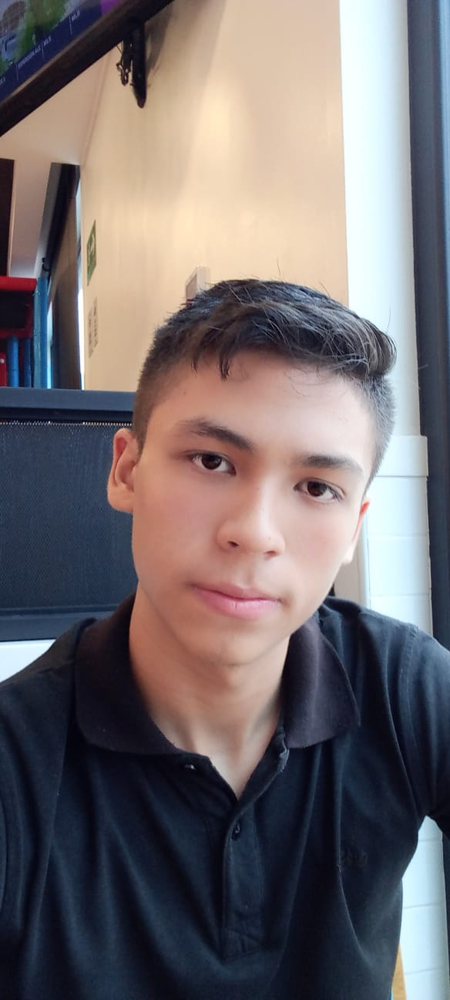
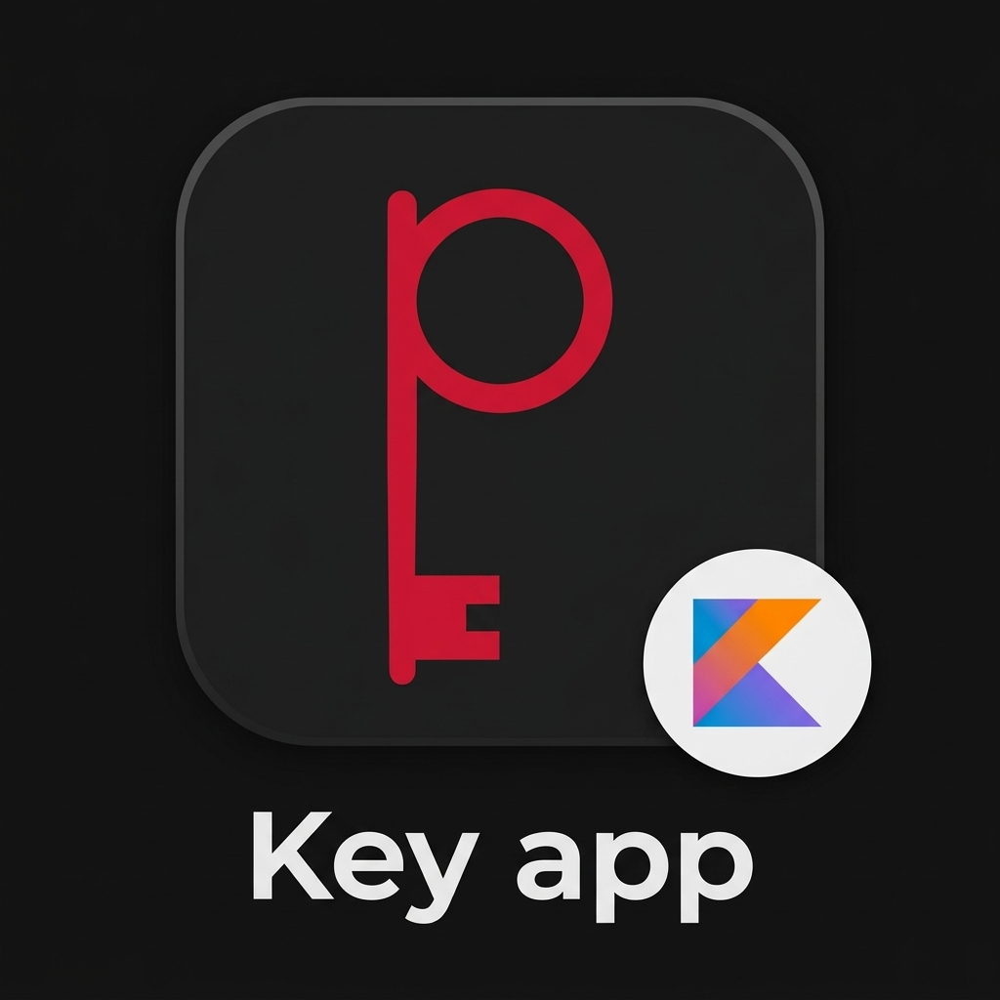
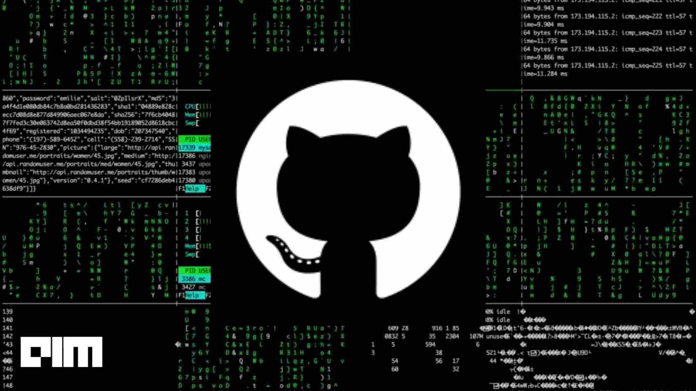
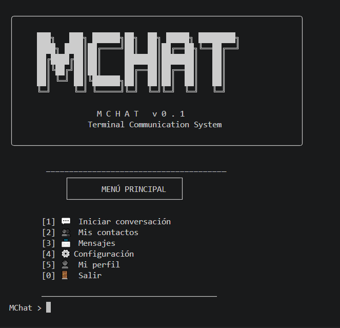

🔤Python
Multicode-System
Herramienta de terminal para codificar y decodificar texto en ASCII, binario, Base64, hexadecimal y Unicode, con detector automático de formato (beta).
Ver en GitHub →
M@MMLabsDev
Estudiante apasionado por el Desarrollo de Software y Ciberseguridad.
Construyo proyectos, experimento con tecnología y siempre estoy aprendiendo algo nuevo.
Aunque actualmente soy estudiante de secundaria, ya tengo varios conocimientos avanzados en el desarrollo de Software y la Ciberseguridad, y lo que más disfruto de ello es entender cómo funcionan las cosas por dentro: desde crear una herramienta de terminal hasta investigar cómo se protege (o se rompe) un sistema.
Aprendo construyendo: pruebo, me equivoco, corrijo y vuelvo a intentar. Me importa escribir código ordenado, usar buenas prácticas y compartir lo que voy descubriendo.
Herramienta de terminal para codificar y decodificar texto en ASCII, binario, Base64, hexadecimal y Unicode, con detector automático de formato (beta).
Ver en GitHub →Herramienta de decodificación de imagenes de cualquier formato a b64 para fines de programación o para usos relacionados con el hacking ético (Evación de filtros)
Ver en GitHub →Estoy trabajando con APIs y muchas cosas más para construir un invento que desafíe mis límites: Mchat
Enlace →Pruebas, capturas y cosas que estoy investigando o en las que estoy trabajando


